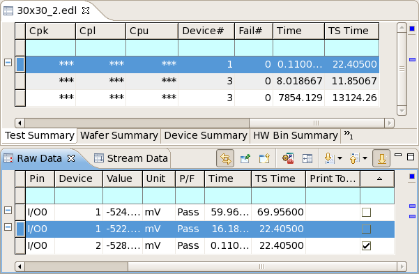

Excluding data from evaluation
You can exclude specific test results from evaluation in the summary views and results graphs by unmarking them in the raw data view. This affects the statistical information shown in summary views as well as the result graphs based on that information.
About this task
Exclude data when you want to evaluate data logs while disregarding outliers or other individual results that may obscure information you are looking for.
Data from the system data log stream cannot be excluded.
Before you begin
- Load the data log that you want to examine
- Open it to see its summary view.
- Click the test (or device, wafer, or bin, depending on the summary tab) from which you want to exclude data.
Procedures
Excluding data
Right-click in the raw data view and choose the appropriate command from the Exclude submenu of the shortcut menu:
- Selection to exclude all currently selected rows. (You must have selected the rows you want to exclude before choosing the command.)
- Pass or Fail to exclude all rows containing passed or failed tests, respectively.
- All to remove all rows from the evaluation. (This will usually only make sense if you immediately plan to include rows again.)
Alternatively, you can also uncheck all rows that you want to exclude in the rightmost column, which has exactly the same result. (Depending on the settings in the Raw Data preferences page, this column may not be visible in the raw data view.)
Excluding all but the selected data
As an alternative to the procedure above (where you select the data to exclude), you can select just the data you want to include:
- In the raw data view, select all rows with test results that you want to include in the analysis.
- Right-clicke of the selected rows and choose Analyze Selection from the shortcut menu.
This excludes all unselected rows from the analysis.
Including excluded data again
Right-click in the raw data view and choose the appropriate command from the Include submenu of the shortcut menu:
- Selection to include all currently selected rows. (You must have selected the rows you want to include before choosing the command.)
- All to include all rows in the evaluation.
Alternatively, you can also check all rows that you want to include in the rightmost column.
Results
The excluded rows are no longer considered for the evaluations in the summary views and
also are not included in the data shown in the various results graphs. They are marked with this
symbol  in the annotation ruler and (by default) blue marks in the overview ruler. The row in
the test summary tab to which the excluded rows belong are marked in the same way. (This can be
configured in the annotation preferences.)
in the annotation ruler and (by default) blue marks in the overview ruler. The row in
the test summary tab to which the excluded rows belong are marked in the same way. (This can be
configured in the annotation preferences.)
Any data that is included again is evaluated normally.
The display of the rows in the raw data views is not affected by the exclusion of records. That is, excluded records continue to be displayed normally.
Example
In the example below, all but one row in the raw data view for the selected row in the test summary view have been deselected.
The Integrated Result Tool behaves as if these rows were not present. For example, the Device# column shows just one device (instead of three).

Functional changes
- Introduced in SmarTest 7.2.0
- SmarTest 7.2.1: New indicators for excluded rows.
- SmarTest 7.2.2: Added shortcut menu command Statistics for Selection.
- SmarTest 7.2.3: The Include and Exclude commands were converted into into submenus.